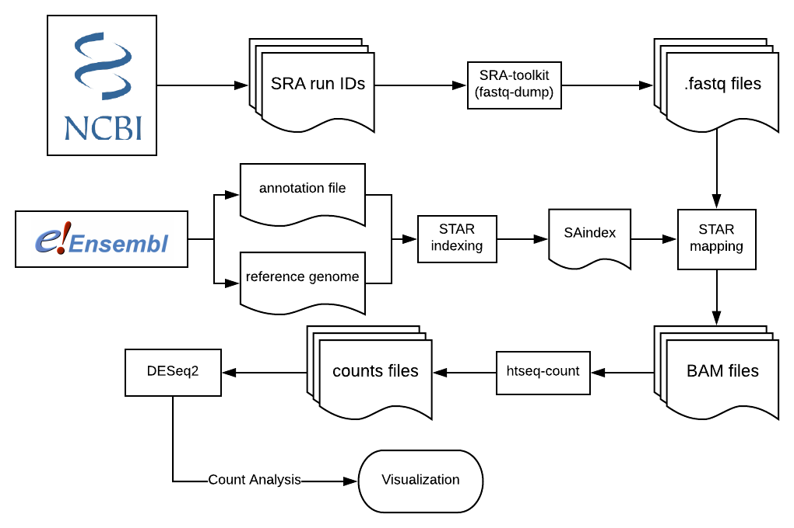
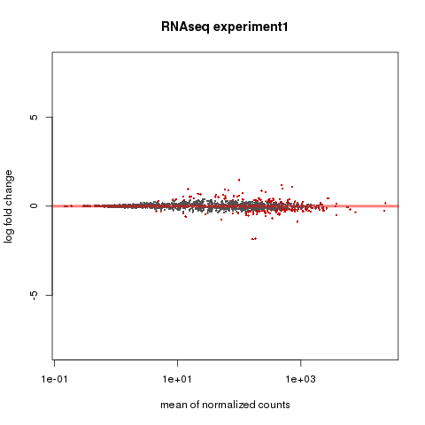
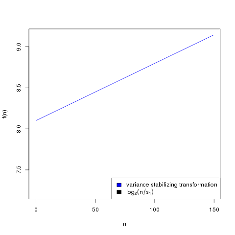
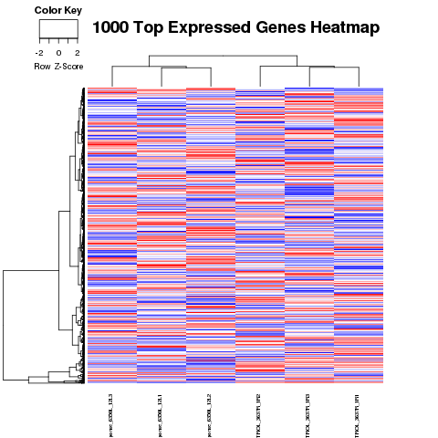
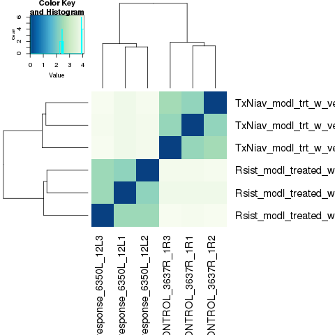
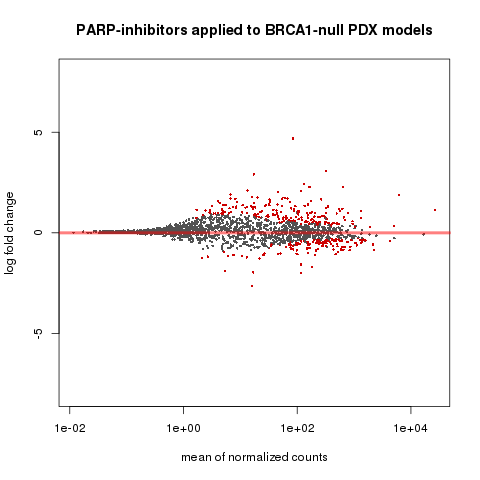
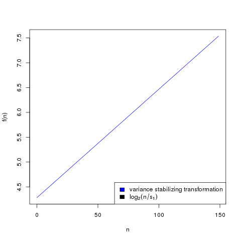
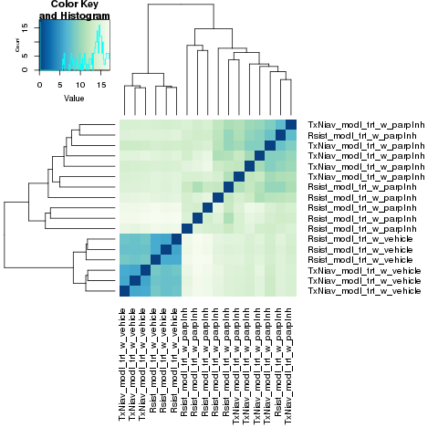
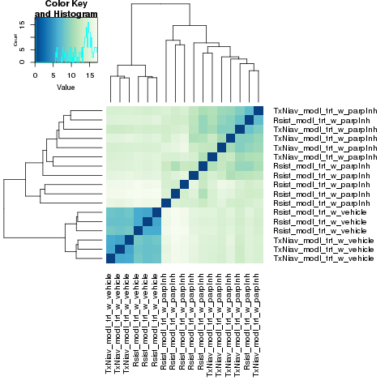

If you need to refresh your memory on the basics of RNA sequencing, this video simply explains the basic principles.
This is an overview of the RNA-seq pipeline we will be using.
As the chart suggests, you will need SRAtoolkit, STAR, htseq, and DESeq2 installed to perform this experiment.
What is this experiment?
File types
fasta stands for "Fast All" and is used for storing reference genome data.
[x]. These files might also use the extension ".fa".
fastq stores genome data along with sequence quality data.
[x][x]
gtf stands for "gene transfer format" and is used to store genes and their attributes.
[x]
These are referred to as "annotations".
SAM stands for "Sequence Alignment Map". SAM files save alignment data of mapped reads against reference genomes.
[x]
BAM stands for "Binary Alignment Map". BAM files contain the same information as SAM files, but stored in binary format.
[x]
Step 0 Setting up your directory
Assuming you have gone through the software installation process, you should have the folder "toolkit" in your home directory with the necessary binary software packages.
Now you will need a path for RNAseq datasets. I named mine "RNAseqExamples". Inside this we will create the folder for the dataset we will be using. I named mine "human" since it's a human.
From your home directory, run the following commands.
echo $homepath
cd RNAseqExamples
cd human
mkdir raw
mkdir map
mkdir logs
mkdir trimmed
mkdir counts
RNApath=$homepath/RNAseqExamples/human
echo $RNApath
mkdir genome
cd genome
mkdir annotations
mkdir assembly
cd $homepath
Step 1
Getting input files
First we'll need the annotation and assembly files for the reference genome.
wget -P $RNApath/genome/assembly/ ftp://ftp.ensembl.org/pub/release-86/fasta/homo_sapiens/dna/Homo_sapiens.GRCh38.dna.chromosome.17.fa.gz
cd $RNApath/genome/annotations/
gunzip Homo_sapiens.GRCh38.86.gtf.gz
cd $RNApath/genome/assembly/
gunzip Homo_sapiens.GRCh38.dna.chromosome.17.fa.gz
Next it's time to download sequence reads. We'll be using SRAtoolkit.
In addition to the normal useage shown in the reference page, we will be taking steps to empty the cache. Each time you use fastq-dump. SRAtoolkit creates a file in the cache to assist the download. But when really large files are downloaded, these files will quickly fill up your cache. So this time, we will be running a command called "cache-mgr" after each call to fastq-dump.
first try running this command
fastq-dump --outdir $RNApath/raw --split-files SRR1930184
to find where SRAtoolkit stores the cache. Mine is stored in "/users/hwynn/ncbi/public/sra"
These files will be very large and it will take a while to download all of them.
RNApath=$homepath/RNAseqExamples/human
SRAcachepath=/path/to/your/sracache
export PATH="$PATH:/home/your_username/toolkit/sratoolkit.2.9.1-1-ubuntu64/bin" fastq-dump --outdir $RNApath/raw --split-files ERR2587301 cache-mgr $SRAcachepath -c fastq-dump --outdir $RNApath/raw --split-files ERR2587302 cache-mgr $SRAcachepath -c fastq-dump --outdir $RNApath/raw --split-files ERR2587303 cache-mgr $SRAcachepath -c fastq-dump --outdir $RNApath/raw --split-files ERR2587304 cache-mgr $SRAcachepath -c fastq-dump --outdir $RNApath/raw --split-files ERR2587305 cache-mgr $SRAcachepath -c fastq-dump --outdir $RNApath/raw --split-files ERR2587306 cache-mgr $SRAcachepath -c
Step 2
Preprocessing: Trimming
Normally we would do a quality control step called trimming. In low quality reads you will find that the runs are surrounded with the letter "N" repeated for a long time. This means that we don't know what nucleic acids are at those positions. "N" could represent any of them. This means these low quality reads could map to a bunch of different positions they probably don't belong. This would mess up our results in the end.
However, the sequence reads that we're using for this experiment use high quality reads. So we don't need to use trimming in this experiment.
Step 3
Preprocessing indexing
Before mapping the reads, we want to create an index for the genome. This makes the mapping process faster.
Important Note: Don't copy/paste the command below until you read this!--runThreadN argument tells STAR how many threads to use. First we must know how many threads your computer can provide.Run this command
nproc --all to learn how many cores your computer has. If your computer has 8 cores, it can definitely provide 8 threads. The computer I'm running this on has 32 cores, so any command arguments about threads will have 32 as the value. You'll want to modify this value in all following commands if your computer doesn't have 32 cores.Run the following command to create the index we'll be using.
--genomeFastaFiles $RNApath/genome/assembly/Homo_sapiens.GRCh38.dna.chromosome.17.fa \
--sjdbGTFfile $RNApath/genome/annotations/Homo_sapiens.GRCh38.86.gtf \
--runThreadN 32
Step 4
Alignment and mapping
Alignment compares individual reads to a reference genome sequence.[x]
Here's a basic visualization of the alignment process:[x]
These are the commands to align and map all of our reads. Running these will take a VERY long time. So I'd recommend running these commands overnight.
--readFilesIn $RNApath/raw/ERR2587301_1.fastq $RNApath/raw/ERR2587301_2.fastq \
--runThreadN 32 --outSAMtype BAM Unsorted --outFileNamePrefix $RNApath/map/
STAR --genomeDir $RNApath/genome/ \
--readFilesIn $RNApath/raw/ERR2587302_1.fastq $RNApath/raw/ERR2587302_2.fastq \
--runThreadN 32 --outSAMtype BAM Unsorted --outFileNamePrefix $RNApath/map/ERR2587302
STAR --genomeDir $RNApath/genome/ \
--readFilesIn $RNApath/raw/ERR2587303_1.fastq $RNApath/raw/ERR2587303_2.fastq \
--runThreadN 32 --outSAMtype BAM Unsorted --outFileNamePrefix $RNApath/map/ERR2587303
STAR --genomeDir $RNApath/genome/ \
--readFilesIn $RNApath/raw/ERR2587304_1.fastq $RNApath/raw/ERR2587304_2.fastq \
--runThreadN 32 --outSAMtype BAM Unsorted --outFileNamePrefix $RNApath/map/ERR2587304
STAR --genomeDir $RNApath/genome/ \
--readFilesIn $RNApath/raw/ERR2587305_1.fastq $RNApath/raw/ERR2587305_2.fastq \
--runThreadN 32 --outSAMtype BAM Unsorted --outFileNamePrefix $RNApath/map/ERR2587305
STAR --genomeDir $RNApath/genome/ \
--readFilesIn $RNApath/raw/ERR2587306_1.fastq $RNApath/raw/ERR2587306_2.fastq \
--runThreadN 32 --outSAMtype BAM Unsorted --outFileNamePrefix $RNApath/map/ERR2587306
Step 5
Count based Abundance Estimation
Welcome back. In this next step we count the number of reads that map to each gene. After that mapping step, I'll assume you're starting a new session. So run the following commands from your home directory.
echo $homepath
cd RNAseqExamples
cd human
RNApath=$homepath/RNAseqExamples/human
echo $RNApath
htseq-count -s no -r pos -f bam $RNApath/map/ERR2587301Aligned.out.bam \
$RNApath/genome/annotations/Homo_sapiens.GRCh38.86.gtf > $RNApath/counts/ERR2587301-out.counts
htseq-count -s no -r pos -f bam $RNApath/map/ERR2587302Aligned.out.bam \
$RNApath/genome/annotations/Homo_sapiens.GRCh38.86.gtf > $RNApath/counts/ERR2587302-out.counts
htseq-count -s no -r pos -f bam $RNApath/map/ERR2587303Aligned.out.bam \
$RNApath/genome/annotations/Homo_sapiens.GRCh38.86.gtf > $RNApath/counts/ERR2587303-out.counts
htseq-count -s no -r pos -f bam $RNApath/map/ERR2587304Aligned.out.bam \
$RNApath/genome/annotations/Homo_sapiens.GRCh38.86.gtf > $RNApath/counts/ERR2587304-out.counts
htseq-count -s no -r pos -f bam $RNApath/map/ERR2587305Aligned.out.bam \
$RNApath/genome/annotations/Homo_sapiens.GRCh38.86.gtf > $RNApath/counts/ERR2587305-out.counts
htseq-count -s no -r pos -f bam $RNApath/map/ERR2587306Aligned.out.bam \
$RNApath/genome/annotations/Homo_sapiens.GRCh38.86.gtf > $RNApath/counts/ERR2587306-out.counts
Step 6
Count Analysis
We will be analyzing the count data. This will be done in the program R. So the following commands probably won't work as a shell script. You'll just have to copy and paste them into the command line. Be warned that copying and pasting too many of these commands at once might confuse the program. So just take this part slowly.
The following section has been adapted from this tutorial.
First from the home directory, run R
directory <- "/home/your_username/RNAseqExamples/human/counts"
setwd(directory)
outputPrefix <- "human_DESeq2"
sampleFiles<- c("ERR2587301-out.counts","ERR2587302-out.counts","ERR2587303-out.counts","ERR2587304-out.counts","ERR2587305-out.counts","ERR2587306-out.counts")
sampleNames <- c("201STG_CONTROL_3637R_1R1","201STG_CONTROL_3637R_1R2","201STG_CONTROL_3637R_1R3","201STG_ Olaparib-response_6350L_12L1","201STG_ Olaparib-response_6350L_12L2","201STG_ Olaparib-response_6350L_12L3")
Now we must enter the conditions. "Treated with vehicle" means the sample was treated with the same solution that it was cultured on.[x] So it's control group.
Treatment naive means the cells are from a patient that has never undergone treatment for a certain illness.[x]
treatments = c("TxNiav_modl_trt_w_vehicle","Rsist_modl_trt_w_vehicle")
ddsHTSeq <- DESeqDataSetFromHTSeqCount(sampleTable = sampleTable, directory = directory, design = ~ condition)
colData(ddsHTSeq)$condition <- factor(colData(ddsHTSeq)$condition, levels = treatments)
dds <- DESeq(ddsHTSeq)
res <- results(dds)
res= subset(res, padj<0.05)
res <- res[order(res$padj),]
resdata <- merge(as.data.frame(res), as.data.frame(counts(dds,normalized =TRUE)), by = 'row.names', sort = FALSE)
names(resdata)[1] <- 'gene'
write.csv(resdata, file = paste0(outputPrefix, "norm-results1.csv"))
write.table(as.data.frame(counts(dds),normalized=T), file = paste0(outputPrefix, "_normalized_counts1.txt"), sep = '\t')
Step 7
Visualization
Don't quit out of R yet. These commands will visualize the data we've created. Do not copy and paste all of these commands at once. R will get confused, and you'll have to start this step all over again. Take this process slowly.
write.csv(as.data.frame(mcols(res, use.name = T)),file = paste0(outputPrefix, "-test-conditions1.csv"))
ddsClean <- replaceOutliersWithTrimmedMean(dds)
ddsClean <- DESeq(ddsClean)
tab <- table(initial = results(dds)$padj < 0.05,cleaned = results(ddsClean)$padj < 0.05)
addmargins(tab)
write.csv(as.data.frame(tab),file = paste0(outputPrefix, "-replaceoutliers1.csv"))
resClean <- results(ddsClean)
resClean = subset(res, padj<0.05)
resClean <- resClean[order(resClean$padj),]
write.csv(as.data.frame(resClean),file = paste0(outputPrefix, "-replaceoutliers-results1.csv"))
png(filename="/home/your_username/RNAseqExamples/human/counts/MAinitial_analysis1.png")
plotMA(dds, ylim=c(-8,8),main = "RNAseq experiment1")
dev.off()
rld <- rlogTransformation(dds, blind=T)
vsd <- varianceStabilizingTransformation(dds, blind=T)
write.table(as.data.frame(assay(rld),file = paste0(outputPrefix, "-rlog-transformed-counts1.txt"), sep = '\t'))
write.table(as.data.frame(assay(vsd),file = paste0(outputPrefix, "-vst-transformed-counts1.txt"), sep = '\t'))
par(mai = ifelse(1:4 <= 2, par('mai'),0))
px <- counts(dds)[,1] / sizeFactors(dds)[1]
ord <- order(px)
ord <- ord[px[ord] < 150]
ord <- ord[seq(1,length(ord),length=50)]
last <- ord[length(ord)]
vstcol <- c('blue','black')
png(filename="/home/your_username/RNAseqExamples/human/counts/MATvariance_stabilizing1.png")
matplot(px[ord], cbind(assay(vsd)[,1], log2(px))[ord, ],type='l', lty = 1, col=vstcol, xlab = 'n', ylab = 'f(n)')
legend('bottomright',legend=c(expression('variance stabilizing transformation'), expression(log[2](n/s[1]))), fill=vstcol)
dev.off()
library("RColorBrewer")
library("gplots")
distsRL <- dist(t(assay(rld)))
mat <- as.matrix(distsRL)
rownames(mat) <- colnames(mat) <- with(colData(dds), paste(condition, sampleNames, sep=" : "))
hmcol <- colorRampPalette(brewer.pal(9, "GnBu"))(100)
png(filename="/home/your_username/RNAseqExamples/human/counts/MAclustering1.png")
heatmap.2(mat, trace = "none", col = rev(hmcol), margin = c(13,13))
dev.off()
library("genefilter")
library("ggplot2")
library("grDevices")
rv <- rowVars(assay(rld))
select <- order(rv, decreasing=T)[seq_len(min(500,length(rv)))]
pc <- prcomp(t(assay(vsd)[select,]))
# set condition
condition <- treatments
scores <- data.frame(pc$x, condition)
(pcaplot <- ggplot(scores, aes(x = PC1, y = PC2, col = (factor(condition))))
+ geom_point(size = 5)
+ ggtitle("Principal Components")
+ scale_colour_brewer(name = " ", palette = "Set1")
+ theme(
plot.title = element_text(face = 'bold'),
legend.position = c(.9,.2),
legend.key = element_rect(fill = 'NA'),
legend.text = element_text(size = 10, face = "bold"),
axis.text.y = element_text(colour = "Black"),
axis.text.x = element_text(colour = "Black"),
axis.title.x = element_text(face = "bold"),
axis.title.y = element_text(face = 'bold'),
panel.grid.major.x = element_blank(),
panel.grid.major.y = element_blank(),
panel.grid.minor.x = element_blank(),
panel.grid.minor.y = element_blank(),
panel.background = element_rect(color = 'black',fill = NA)
))
ggsave(pcaplot,file=paste0(outputPrefix, "-ggplot21.pdf"))
# scatter plot of rlog transformations between Sample conditions
head(assay(rld))
# plot(log2(1+counts(dds,normalized=T)[,1:2]),col='black',pch=20,cex=0.3, main='Log2 transformed')
plot(assay(rld)[,1:3],col='#00000020',pch=20,cex=0.3, main = "rlog transformed")
plot(assay(rld)[,2:4],col='#00000020',pch=20,cex=0.3, main = "rlog transformed")
plot(assay(rld)[,6:5],col='#00000020',pch=20,cex=0.3, main = "rlog transformed")
# heatmap of data
library("RColorBrewer")
library("gplots")
# 1000 top expressed genes with heatmap.2
select <- order(rowMeans(counts(ddsClean,normalized=T)),decreasing=T)[1:1000]
my_palette <- colorRampPalette(c("blue",'white','red'))(n=1000)
png(filename="/home/your_username/RNAseqExamples/human/counts/HEATMAP1.png")
heatmap.2(assay(vsd)[select,], col=my_palette,scale="row",key=T,keysize=1,symkey=T,density.info="none", trace="none",cexCol=0.6, labRow=F,main="1000 Top Expressed Genes Heatmap")
dev.off()
Check Results
You should have pictures that look like this.




That's it. Run q() to quit R.
Experiment Further
All the previous steps only covered an experiment using just the control group. We saw the gene expression differences between the resistant model and the treatment naive model. Now for those of you that want to try running a more complete experiment, keep going from here. This will be a more complete experiment using
the control treated models and the models treated with PARP inhibitor.
This part is a completely optional expansion on what we've already done. So if you had any trouble storing all those files or running any of the programs, don't worry about this stuff. This is just for those that are curious and capable to keep going further.
First we need to download all the extra files and run them through the same process to get the counts. This will take a very, very long time. So I recommend that you create a script of the following commands. Be careful to adjust the script to match your setup as we did in all the previous steps. You don't want to find out that the script that took all night to run got stuck because of an error.
export PATH="$PATH:/home/your_username/toolkit/sratoolkit.2.9.1-1-ubuntu64/bin"
export PATH="$PATH:/home/your_username/toolkit/star/STAR-master/bin/Linux_x86_64"
homepath=$(pwd)
echo $homepath
cd RNAseqExamples
cd human
RNApath=$homepath/RNAseqExamples/human
echo $RNApath
fastq-dump --outdir $RNApath/raw --split-files ERR2587348
cache-mgr /users/your_username/ncbi/public/sra -c
fastq-dump --outdir $RNApath/raw --split-files ERR2587347
cache-mgr /users/your_username/ncbi/public/sra -c
fastq-dump --outdir $RNApath/raw --split-files ERR2587343
cache-mgr /users/your_username/ncbi/public/sra -c
fastq-dump --outdir $RNApath/raw --split-files ERR2587342
cache-mgr /users/your_username/ncbi/public/sra -c
fastq-dump --outdir $RNApath/raw --split-files ERR2587341
cache-mgr /users/your_username/ncbi/public/sra -c
fastq-dump --outdir $RNApath/raw --split-files ERR2587340
cache-mgr /users/your_username/ncbi/public/sra -c
fastq-dump --outdir $RNApath/raw --split-files ERR2587346
cache-mgr /users/your_username/ncbi/public/sra -c
fastq-dump --outdir $RNApath/raw --split-files ERR2587345
cache-mgr /users/your_username/ncbi/public/sra -c
fastq-dump --outdir $RNApath/raw --split-files ERR2587344
cache-mgr /users/your_username/ncbi/public/sra -c
fastq-dump --outdir $RNApath/raw --split-files ERR2587339
cache-mgr /users/your_username/ncbi/public/sra -c
fastq-dump --outdir $RNApath/raw --split-files ERR2587338
cache-mgr /users/your_username/ncbi/public/sra -c
STAR --genomeDir $RNApath/genome/ \
--readFilesIn $RNApath/raw/ERR2587348_1.fastq $RNApath/raw/ERR2587348_2.fastq \
--runThreadN 32 --outSAMtype BAM Unsorted --outFileNamePrefix $RNApath/map/ERR2587348
STAR --genomeDir $RNApath/genome/ \
--readFilesIn $RNApath/raw/ERR2587347_1.fastq $RNApath/raw/ERR2587347_2.fastq \
--runThreadN 32 --outSAMtype BAM Unsorted --outFileNamePrefix $RNApath/map/ERR2587347
STAR --genomeDir $RNApath/genome/ \
--readFilesIn $RNApath/raw/ERR2587343_1.fastq $RNApath/raw/ERR2587343_2.fastq \
--runThreadN 32 --outSAMtype BAM Unsorted --outFileNamePrefix $RNApath/map/ERR2587343
STAR --genomeDir $RNApath/genome/ \
--readFilesIn $RNApath/raw/ERR2587342_1.fastq $RNApath/raw/ERR2587342_2.fastq \
--runThreadN 32 --outSAMtype BAM Unsorted --outFileNamePrefix $RNApath/map/ERR2587342
STAR --genomeDir $RNApath/genome/ \
--readFilesIn $RNApath/raw/ERR2587341_1.fastq $RNApath/raw/ERR2587341_2.fastq \
--runThreadN 32 --outSAMtype BAM Unsorted --outFileNamePrefix $RNApath/map/ERR2587341
STAR --genomeDir $RNApath/genome/ \
--readFilesIn $RNApath/raw/ERR2587340_1.fastq $RNApath/raw/ERR2587340_2.fastq \
--runThreadN 32 --outSAMtype BAM Unsorted --outFileNamePrefix $RNApath/map/ERR2587340
STAR --genomeDir $RNApath/genome/ \
--readFilesIn $RNApath/raw/ERR2587346_1.fastq $RNApath/raw/ERR2587346_2.fastq \
--runThreadN 32 --outSAMtype BAM Unsorted --outFileNamePrefix $RNApath/map/ERR2587346
STAR --genomeDir $RNApath/genome/ \
--readFilesIn $RNApath/raw/ERR2587345_1.fastq $RNApath/raw/ERR2587345_2.fastq \
--runThreadN 32 --outSAMtype BAM Unsorted --outFileNamePrefix $RNApath/map/ERR2587345
STAR --genomeDir $RNApath/genome/ \
--readFilesIn $RNApath/raw/ERR2587344_1.fastq $RNApath/raw/ERR2587344_2.fastq \
--runThreadN 32 --outSAMtype BAM Unsorted --outFileNamePrefix $RNApath/map/ERR2587344
STAR --genomeDir $RNApath/genome/ \
--readFilesIn $RNApath/raw/ERR2587339_1.fastq $RNApath/raw/ERR2587339_2.fastq \
--runThreadN 32 --outSAMtype BAM Unsorted --outFileNamePrefix $RNApath/map/ERR2587339
STAR --genomeDir $RNApath/genome/ \
--readFilesIn $RNApath/raw/ERR2587338_1.fastq $RNApath/raw/ERR2587338_2.fastq \
--runThreadN 32 --outSAMtype BAM Unsorted --outFileNamePrefix $RNApath/map/ERR2587338
htseq-count -s no -r pos -f bam $RNApath/map/ERR2587348Aligned.out.bam \
$RNApath/genome/annotations/Homo_sapiens.GRCh38.86.gtf > $RNApath/counts/ERR2587348-out.counts
htseq-count -s no -r pos -f bam $RNApath/map/ERR2587347Aligned.out.bam \
$RNApath/genome/annotations/Homo_sapiens.GRCh38.86.gtf > $RNApath/counts/ERR2587347-out.counts
htseq-count -s no -r pos -f bam $RNApath/map/ERR2587343Aligned.out.bam \
$RNApath/genome/annotations/Homo_sapiens.GRCh38.86.gtf > $RNApath/counts/ERR2587343-out.counts
htseq-count -s no -r pos -f bam $RNApath/map/ERR2587342Aligned.out.bam \
$RNApath/genome/annotations/Homo_sapiens.GRCh38.86.gtf > $RNApath/counts/ERR2587342-out.counts
htseq-count -s no -r pos -f bam $RNApath/map/ERR2587341Aligned.out.bam \
$RNApath/genome/annotations/Homo_sapiens.GRCh38.86.gtf > $RNApath/counts/ERR2587341-out.counts
htseq-count -s no -r pos -f bam $RNApath/map/ERR2587340Aligned.out.bam \
$RNApath/genome/annotations/Homo_sapiens.GRCh38.86.gtf > $RNApath/counts/ERR2587340-out.counts
htseq-count -s no -r pos -f bam $RNApath/map/ERR2587346Aligned.out.bam \
$RNApath/genome/annotations/Homo_sapiens.GRCh38.86.gtf > $RNApath/counts/ERR2587346-out.counts
htseq-count -s no -r pos -f bam $RNApath/map/ERR2587345Aligned.out.bam \
$RNApath/genome/annotations/Homo_sapiens.GRCh38.86.gtf > $RNApath/counts/ERR2587345-out.counts
htseq-count -s no -r pos -f bam $RNApath/map/ERR2587344Aligned.out.bam \
$RNApath/genome/annotations/Homo_sapiens.GRCh38.86.gtf > $RNApath/counts/ERR2587344-out.counts
htseq-count -s no -r pos -f bam $RNApath/map/ERR2587339Aligned.out.bam \
$RNApath/genome/annotations/Homo_sapiens.GRCh38.86.gtf > $RNApath/counts/ERR2587339-out.counts
htseq-count -s no -r pos -f bam $RNApath/map/ERR2587338Aligned.out.bam \
$RNApath/genome/annotations/Homo_sapiens.GRCh38.86.gtf > $RNApath/counts/ERR2587338-out.counts
Save this as a bash script "experimentFurther.sh" and store it on your home directory.
Give yourself permission to run the script with chmod 775 experimentFurther.sh
You can start this script sometime when you'll be away from your computer for a long time. I recommend running the script overnight.
To start the script, just run ./experimentFurther.sh
Now we have the count data from untreated and treated runs. The analysis and visualization process will be similar to before. You will be able to see the difference the treatment group creates.
Let's repeat the stuff we did in R. From the home directory, start R and run the following commands. Only paste a few commands at a time.
directory <- "/home/your_username/RNAseqExamples/human/counts"
setwd(directory)
outputPrefix <- "breast_cancer"
sampleFiles<- c("ERR2587301-out.counts","ERR2587302-out.counts","ERR2587303-out.counts","ERR2587304-out.counts","ERR2587305-out.counts","ERR2587306-out.counts","ERR2587346-out.counts","ERR2587345-out.counts","ERR2587344-out.counts","ERR2587339-out.counts","ERR2587338-out.counts","ERR2587348-out.counts","ERR2587347-out.counts","ERR2587343-out.counts","ERR2587342-out.counts","ERR2587341-out.counts","ERR2587340-out.counts")
sampleNames <- c("201STG_CONTROL_3637R_1R1","201STG_CONTROL_3637R_1R2","201STG_CONTROL_3637R_1R3","201STG_ Olaparib-response_6350L_12L1","201STG_ Olaparib-response_6350L_12L2","201STG_ Olaparib-response_6350L_12L3","178_16 201STG OLAP OR 14L","552_17 201STG OR Cntl 1R","552_17 201STG OR Cntl 4R","552_17201STG OR Cntl 3R","552_17 201STG OR Cntl 1L","552_17 201STG OR Olap 11R","552_17 201STG OR Olap 13R","552_17 201STG OR Olap 15R","552_17 201STG OR Olap 12L","552_17 201STG OR Olap 14R","552_17 201STG OR Olap 15L")
sampleCondition <- c("TxNiav_modl_trt_w_vehicle","TxNiav_modl_trt_w_vehicle","TxNiav_modl_trt_w_vehicle","Rsist_modl_trt_w_vehicle","Rsist_modl_trt_w_vehicle","Rsist_modl_trt_w_vehicle","TxNiav_modl_trt_w_parpInh","TxNiav_modl_trt_w_parpInh","TxNiav_modl_trt_w_parpInh","TxNiav_modl_trt_w_parpInh","TxNiav_modl_trt_w_parpInh","Rsist_modl_trt_w_parpInh","Rsist_modl_trt_w_parpInh","Rsist_modl_trt_w_parpInh","Rsist_modl_trt_w_parpInh","Rsist_modl_trt_w_parpInh","Rsist_modl_trt_w_parpInh")
sampleTable <- data.frame(sampleName = sampleNames, fileName = sampleFiles, condition = sampleCondition)
treatments = c("TxNiav_modl_trt_w_vehicle","Rsist_modl_trt_w_vehicle","TxNiav_modl_trt_w_parpInh","Rsist_modl_trt_w_parpInh")
ddsHTSeq <- DESeqDataSetFromHTSeqCount(sampleTable = sampleTable, directory = directory, design = ~ condition)
colData(ddsHTSeq)$condition <- factor(colData(ddsHTSeq)$condition, levels = treatments)
dds <- DESeq(ddsHTSeq)
res <- results(dds)
res= subset(res, padj<0.05)
res <- res[order(res$padj),]
resdata <- merge(as.data.frame(res), as.data.frame(counts(dds,normalized =TRUE)), by = 'row.names', sort = FALSE)
names(resdata)[1] <- 'gene'
write.csv(resdata, file = paste0(outputPrefix, "norm-results2.csv"))
write.table(as.data.frame(counts(dds),normalized=T), file = paste0(outputPrefix, "_normalized_counts2.txt"), sep = '\t')
mcols(res, use.names = T)
write.csv(as.data.frame(mcols(res, use.name = T)),file = paste0(outputPrefix, "-test-conditions2.csv"))
ddsClean <- replaceOutliersWithTrimmedMean(dds)
ddsClean <- DESeq(ddsClean)
tab <- table(initial = results(dds)$padj < 0.05,cleaned = results(ddsClean)$padj < 0.05)
addmargins(tab)
write.csv(as.data.frame(tab),file = paste0(outputPrefix, "-replaceoutliers2.csv"))
resClean <- results(ddsClean)
resClean = subset(res, padj<0.05)
resClean <- resClean[order(resClean$padj),]
write.csv(as.data.frame(resClean),file = paste0(outputPrefix, "-replaceoutliers-results2.csv"))
png(filename="/home/your_username/RNAseqExamples/human/counts/MAinitial_analysis2.png")
plotMA(dds, ylim=c(-8,8),main = "PARP-inhibitors applied to BRCA1-null PDX models")
dev.off()
rld <- rlogTransformation(dds, blind=T)
vsd <- varianceStabilizingTransformation(dds, blind=T)
write.table(as.data.frame(assay(rld),file = paste0(outputPrefix, "-rlog-transformed-counts2.txt"), sep = '\t'))
write.table(as.data.frame(assay(vsd),file = paste0(outputPrefix, "-vst-transformed-counts2.txt"), sep = '\t'))
par(mai = ifelse(1:4 <= 2, par('mai'),0))
px <- counts(dds)[,1] / sizeFactors(dds)[1]
ord <- order(px)
ord <- ord[px[ord] < 150]
ord <- ord[seq(1,length(ord),length=50)]
last <- ord[length(ord)]
vstcol <- c('blue','black')
png(filename="/home/your_username/RNAseqExamples/human/counts/MATvariance_stabilizing2.png")
matplot(px[ord], cbind(assay(vsd)[,1], log2(px))[ord, ],type='l', lty = 1, col=vstcol, xlab = 'n', ylab = 'f(n)')
legend('bottomright',legend=c(expression('variance stabilizing transformation'), expression(log[2](n/s[1]))), fill=vstcol)
dev.off()
library("RColorBrewer")
library("gplots")
distsRL <- dist(t(assay(rld)))
mat <- as.matrix(distsRL)
rownames(mat) <- colnames(mat) <- with(colData(dds), condition)
hmcol <- colorRampPalette(brewer.pal(9, "GnBu"))(100)
png(filename="/home/your_username/RNAseqExamples/human/counts/MAclustering2.png")
heatmap.2(mat, trace = "none", col = rev(hmcol), margin = c(13,13))
dev.off()
library("genefilter")
library("ggplot2")
library("grDevices")
# heatmap of data
library("RColorBrewer")
library("gplots")
# 1000 top expressed genes with heatmap.2
select <- order(rowMeans(counts(ddsClean,normalized=T)),decreasing=T)[1:1000]
my_palette <- colorRampPalette(c("blue",'white','red'))(n=1000)
png(filename="/home/your_username/RNAseqExamples/human/counts/HEATMAP2.png")
heatmap.2(assay(vsd)[select,], col=my_palette,scale="row",key=T,keysize=1,symkey=T,density.info="none", trace="none",cexCol=0.6, labRow=F,main="1000 Top Expressed Genes Heatmap")
dev.off()
You should now have charts that look like this
  
You can use R to try different analysis strategies. You can use Rstudio on your own computer. Rstudio is availible for Mac and Windows unlike many of the other programs in our RNA-seq pipeline.